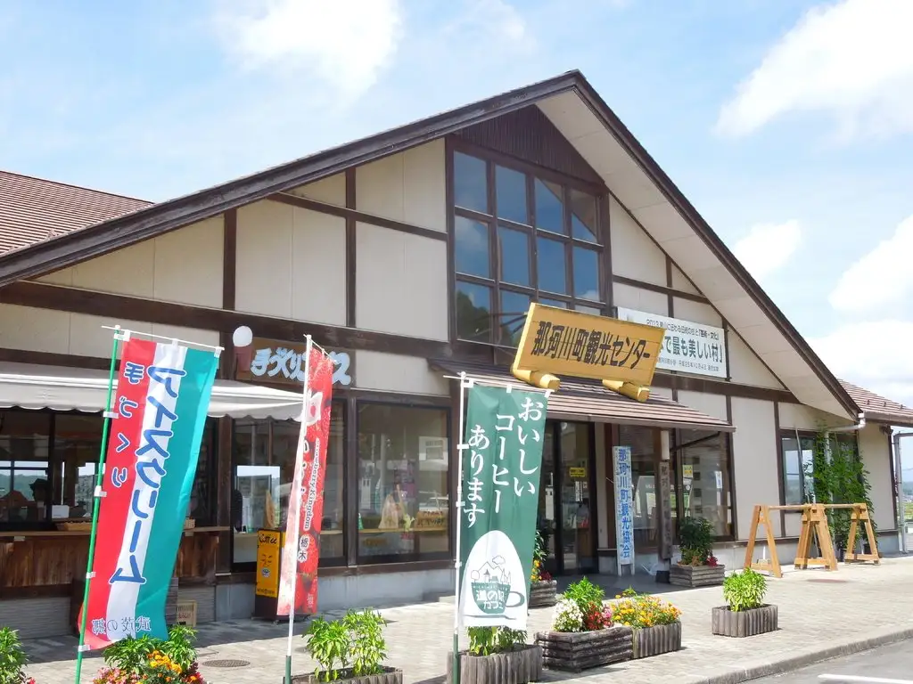
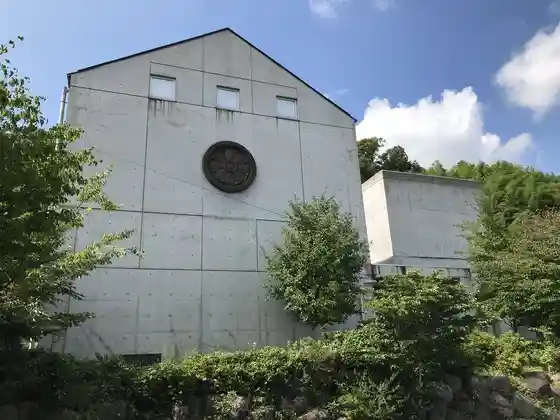
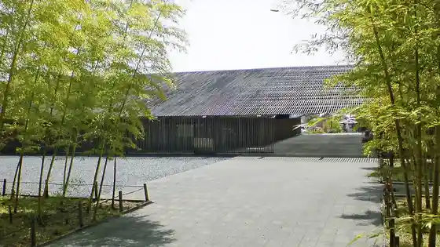
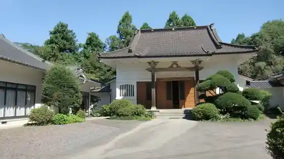
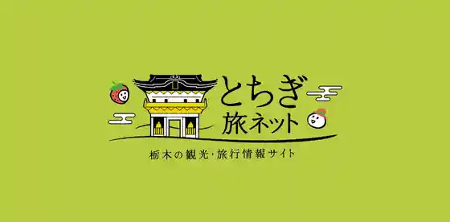

Nakagawacho
Nakagawacho · Tochigi
Nakagawacho
Highlighted on the Tochigi map.

Sights
Nakagawacho Tourism Association
Nakagawacho Mezu Local History Museum

Nakagawacho Mezu Hiroshige Art Museum

Nijushi Yakara Dai Jusan Ban Ji Gan Tera

Nakagawacho Nasu Fudoki no Oka Museum

Nakagawacho Takumi no Kan Folk Museum
to no Gosho Yokoana
Toyama no Iwauchiwa